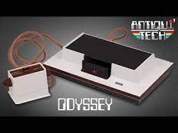
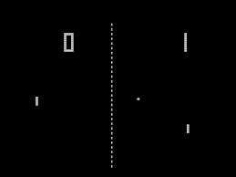

|
Au début des années 70, des perspectives commerciales commencent à être envisagées.
Bill Pitts et Hugh Tuck développent Galaxy Game à l'université Stanford en 1971,
un jeu sur ordinateur équipé d'un monnayeur, qui utilise
un ordinateur DEC PDP-11 à affichage vectoriel.
Ils s'inspirent du jeu Spacewar!. La mise sur le marché des prototypes de Galaxy Game, avec un prix par partie minime, est cependant très populaire.
Toutefois, le premier jeu d'arcade connu ne passera jamais en production en raison d'un coût trop élevé et de l'absence d'un plan d'affaires.
|

C'est toutefois en 1972 qu'est comercialisée la première console
de jeu de salon, l'Odyssey.
Atari, de son côté, continue sur le marché de l'arcade en 1973 avec le premier jeu de course publié: Space Race.
Mais, d'une certaine façon, le jeu indépendant fait aussi son apparition.
De nombreux universitaires enseignant ou étudiant en informatique vont programmer leur propre vision du jeu vidéo et jeter les bases de nombreux
titres ultérieurs.
|
La couleur, déjà timidement présente sur les bornes d'arcade depuis
1973 avec le jeu Wimbledon, s'invite alors chez les particuliers.
En effet, l'Atari 2600, ainsi que sa principale concurrente de l'époque
la Channel F, vont proposer un catalogue de plus en plus conséquent de jeux en couleurs. L'Atari est même vendue d'origine avec le jeu Combat.
En 1978, on assiste à la première apparition de Nintendo dans ce domaine avec une borne d'arcade copiée sur le jeu éponyme, Othello.
C'est ensuite en 1978 que sortira le très célèbre titre de Tomohiro Nishikado, Space Invaders.
|
|
C'est cette même année que Nolan Bushnell et Ted Dabney développent Computer Space,
fortement inspiré de Spacewar!, sur un système informatique dédié.
C'est le premier jeu d'arcade, équipé d'un monnayeur, à être mis en vente dans le commerce.
Il est également le premier jeu vidéo à être produit en masse avec 1500 exemplaires sur le mois de novembre.

C'est en novembre 1972 que sera alors mise au monde une des premières légendes du jeu vidéo par Nolan Bushnell : PONG.
La borne d'arcade est un vrai succès commercial pour Atari Inc. créé la même année: elle rapporte jusqu'à 40 millions de dollars de chiffres d'affaires en 1975.
Pong est porté sur une console de salon dédiée, sous le nom Home Pong, à partir de 1975.
|
- 1973: Empire, premier jeu de stratégie puis premier jeu à 8 joueurs dans sa V2
- 1973: Maze War, premier jeu de tir à la première personne
- 1974: Spasim, premier multi allant jusqu'à 32 joueurs répartis sur 4 équipes
- 1974: Wander, premier jeu vidéo d'aventure sous forme de fition interactive
- 1975: DnD, premier rogue-like et véritable jeu de rôle virtuel
Il est probable que certains titres soient tombés dans l'oubli. Par exemple, Wander a vu son
code "redécouvert" en 2015 par son auteur dans les archives d'un ami de faculté.
|
La Naissance de l'Industrie
Vidéoludique
|
|
Ce double succès est souvent considéré comme l'évènement précurseur de l'industrie du jeu vidéo.
|
Pendant ce temps, Atari Inc. multiplie les sucès sur borne d'arcade. En 1974, sortent Rebound, le premier jeu vidéo de volley-ball et
Gran Trak 10 le premier jeu de course sur circuit vu du dessus. En 1976, sortira Breakout le premier casse-briques.
Mais c'est en 1977 que la pourtant très jeune entreprise s'imposera de
façon écrasante sur le marché avec la sortie de l'Atari Video Computer System, connue par la suite sous le nom d'Atari 2600.
Elle deviendra console de jeux vidéos leader de sa génération avec
plus de 30 millions d'unités vendues.
|
Le jeu connaît un tel succès qu'il convainc des dizaines de constructeurs de pénétrer le marché en produisant leurs propres jeux vidéo.
L'industrie du jeu d'arcade entre alors dans un âge d'or.
Les premiers jeux d'arcade à succès en couleurs apparaissent en 1979. Atari publie Asteroids, son plus grand succès commercial.
Parmi les autres classiques de cette époque, on peut citer Lunar Lander, Night Driver, Missile Command, Berzerk, Breakout ou Battlezone
|